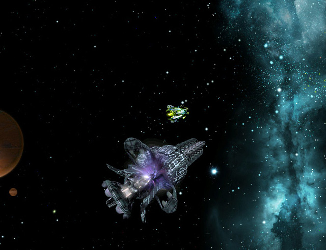
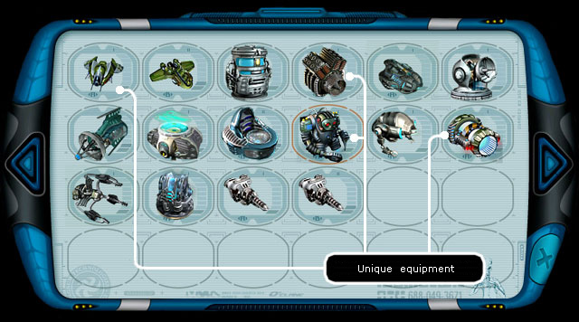
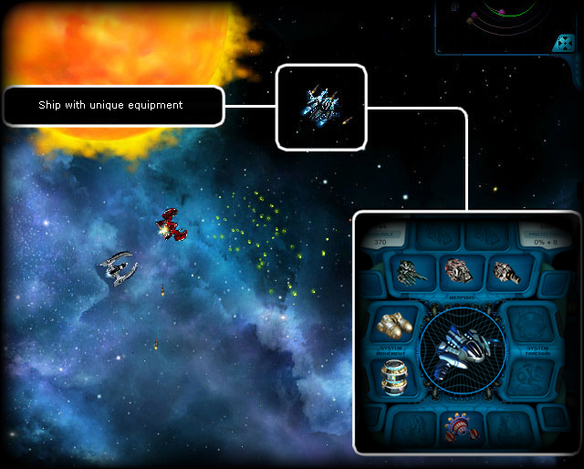

In course of long research operations in the Coalition labs a new unique substance has been discovered, which they called Acryn.
Any equipment, which experienced the procession with the new substance, acquired unique features, which enormously increased the aircraft performance characteristics and combat features of a spaceship.

Despite of it all information about the grand discovery of the Coalition scientists has been thoroughly stonewalled already at the stage of the theoretical researches, separate specimens of the unique equipment appeared in the free sale. And the military and civil ships of the high class, grew to be the slice of the cake for pirates and those who was ready to commit a murder for a chance to obtain a nice piece of iron, which could adorn and upgrade the ship of the plotter, automatically turning him into a potential victim of another luckier criminal.
Having realized the consequences of further concealment of the invention from the ordinary people, on the nearest meeting of the Galaxy Council the rule of thumb was taken to set up a serial manufacture of this unique equipment, which would later enter the free sale.

Act 726 of the Coalition has been accepted with the jubilation from all, who has happened to range the space.
However the technological difficulties of the acryn manufacturing, the unpredictability of the result after its application to the ordinary equipment and high percent of defects, resulted in a new wave of violence in the galaxy suffering from the dominator invasion. Items processed with acryn didn't lie long on the shop shelves. It often came to hand to hand fights for the novelties of the technical progress in the space, and it was the third hand, which won.

It lasted long time, when the demand for the unique equipment exceeded the offer. And the rangers have to expand their main duties with the necessity to maintain order in the survived sectors of the galaxy.